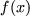
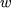
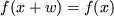
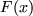

As we have already mentioned, structure
is an integral and significant
aspect of large-scale problems. Structure is often equated with
sparsity; indeed the two are closely linked when the problem is
linear. However, sparsity
is not the most important phenomenon associated with a nonlinear
function; that role is played by invariant subspaces. The invariant subspace
of a function  is the
set of all vectors  for which
 for all possible
vectors  . This phenomenon encompasses function sparsity.
For instance, the function
. This phenomenon encompasses function sparsity.
For instance, the function
A particular objective function  is unlikely to have a large invariant subspace itself. However, many reasonably behaved functions may be expressed as a sum of element functions, each of which does have a large invariant subspace. This is certainly true if the function is sufficiently differentiable and has a sparse Hessian matrix [11]. Thus, rather than storing a function as itself, it pays to store it as the sum of its elements. The elemental representation of a particular function is by no means unique and there may be specific reasons for selecting a particular representation. Specifying Hessian sparsity is also supported in the present proposal, but we believe that it is more efficient and also much easier to specify the invariant subspaces directly.
LANCELOT considers the problem of minimizing or maximizing
an objective function
of the form
It is more common to call the group functions in (2.3) equality constraint functions, those in (2.4) inequality constraint functions and the sum of those in (2.1) the objective function.
When stating a structured nonlinear optimization problem of the form (2.1)-(2.4), we need to specify the group functions, linear and nonlinear elements and the way that they all fit together.